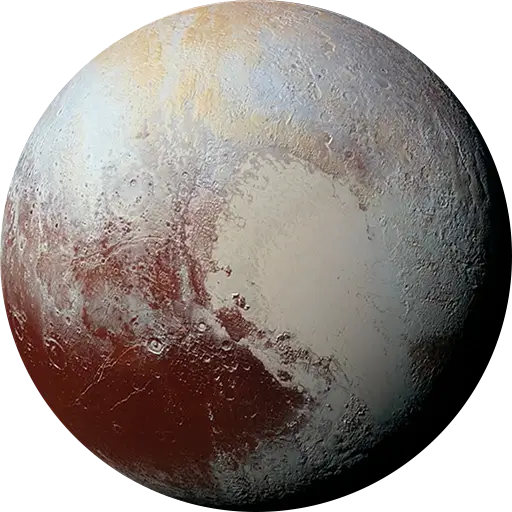
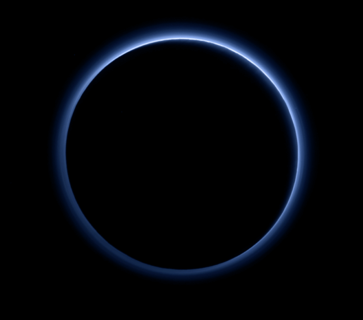

Pluton - obiekt 134340
Spis treści:
- Wstęp oraz informacje ogólne
- Księżyce i historia obserwacji Plutona
- Dlaczego Pluton nie jest planetą?
- Niebieski pierścień
- Ciekawostki
Pluton jest planetą karłowatą znajdującą się w pasie Kuipera, pierścieniu ciał poza orbitą Neptuna. Po jego odkryciu w 1930 roku Pluton został ogłoszony dziewiątą planetą od Słońca. Jednak począwszy od lat 90. jego status planety został zakwestionowany po odkryciu kilku obiektów o podobnej wielkości w Pasie Kuipera oraz w dysku rozproszonym. Obecnie ma on oznaczenie jako obiekt 134340, czyli tak zwany obiekt transneptunowy.
Pluton znajduje się na granicy widzialności przez średnie teleskopy. Z Ziemi może być widziany jako pojedyncza drobna plamka.
| Średnica: | 2310 km |
|---|---|
| Masa: | 1,303×1022 kg |
| Czas obrotu wokół własnej osi: | 153,3h |
| Średnia temperatura powierzchni: | -233 do -223℃ |
| Średnia prędkość na orbicie: | 4,67 km/s |
| Okres obiegu wokół Słońca: | 247,7 lat |
| Występowanie atmosfery: | tak |
| Skład chemiczny: | azot, metan, dwutlenek węgla |
Księżyce
Pluton ma pięć znanych księżyców, a są nimi: Charon (największy, którego średnica jest nieco ponad połowa średnicy Plutona), Styx, Nix, Kerberos oraz Hydra. Pluton i Charon są czasami uważane za układy podwójne, gdyż środek ich orbit nie znajduje się w żadnym z ciał.
Historia obserwacji i badań
Pluton został odkryty w 1930 roku przez Clyde'a Tombaugh'a. Natomiast Charon w 1978 roku przez Christie, Nix oraz Hydra w 2005 roku, a ostatnie dwa księżyce, czyli Kerberos i Styx zostały odkryte poprzez misję New Horizons.
14 lipca 2015 roku sonda New Horizons przeleciała obok Plutona, stając się pierwszym, jak i jedynym póki co statkiem kosmicznym, który to zrobił. W czasie tego niedługiego przelotu New Horizons wykonało szczegółowe pomiary i obserwacje Plutona i jego księżyców. Natomiast we wrześniu 2016 roku ogłoszono, że czerwonawo-brązowa czapa bieguna północnego Charona składa się z tholin - organicznych makrocząsteczek, które mogą być składnikami do powstania życia.
W 2006 roku Pluton oficjalnie przestaje być uważany za planetę i staje się planetą karłowatą zgodnie z ustawą Międzynarodowej Unii Astronomicznej.
Dlaczego Pluton nie jest planetą?
Przyjęta definicja planety oznacza obiekt, który oczyścił ze swojej orbity wszystkie inne ciała niebieskie. Natomiast Pluton nie spełnia owego warunku. Jest to obiekt zwyczajnie zbyt mały, aby przyciągnąć grawitacyjne do siebie inne obiekty z okolicy.
Niebieski pierścień
Jedno ze zdjęć nadesłanych przez wspomnianą wyżej sondę przedstawiało czarną powierzchnię Plutona otoczoną niebieską poświatą.
Do czasu przesłania owego zdjęcia nikt nie spodziewał się, że jakikolwiek obiekt w "bliskim" rejonie Ziemi, czyli w tzw. Pasie Kuipera posiada własną niebieską poświatę. "Kto by pomyślał, że błękitne niebo istnieje gdzieś daleko w Pasie Kuipera? To po prostu wspaniałe!" - uważa Alan Stern, główny badacz misji New Horizons z NASA.
Według badań niebieska barwa może mówić o rozmiarach oraz składzie cząsteczek mgły. Niebieskie niebo często jest efektem rozpraszania światła słonecznego przez bardzo małe cząsteczki. W przypadku Ziemi są to bardzo drobne molekuły azotu. Z kolei na Plutonie rozpraszające cząsteczki wydają się być większe niż na Ziemi, ale nadal względnie małe. Naukowcy sądzą, że są to cząsteczki podobne do sadzy, tzw. tholiny.
Owe cząsteczki najprawdopodobniej powstają wysoko w atmosferze, gdzie światło ultrafioletowe powoduje rozpad i jonizuje cząstki azotu, jak i metanu, co pozwalana na reakcje chemiczne pomiędzy nimi oraz na tworzenie coraz to bardziej złożonych jonów, a następnie molekuł. One będąc złożonymi, kontynuują swój wzrost do coraz większych rozmiarów, dodatkowo lotne gazy ulegają kondensacji, a powierzchnia cząstek mgły powstałych z takowych molekuł pokrywa się warstwą lodu, po czym spadają one przez atmosferę w kierunku powierzchni. Podobny proces został odkryty po raz pierwszy w górnej atmosferze Tytana - jednego z księżyców Saturna.
Źródła grafiki:
NASA, wikipedia.org
Źródła informacji:
„Kosmos – niezbędnik młodego odkrywcy” Wydawnictwo JEDNOŚĆ, „Kosmos – tajemnice Wszechświata. Encyklopedia astronomii astronautyki” Wydawca Oxford Educational Sp.z.o.o., en.wikipedia.org, www.medianauka.pl, www.planetariumec1.pl, www.focus.pl